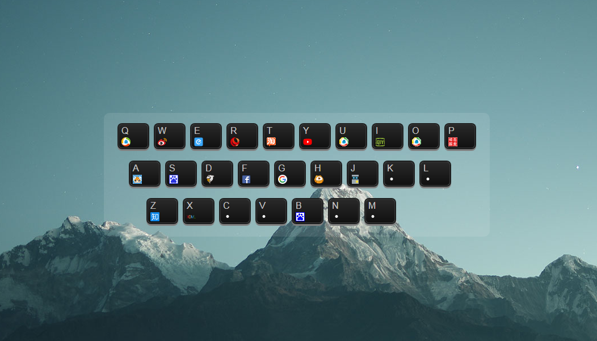
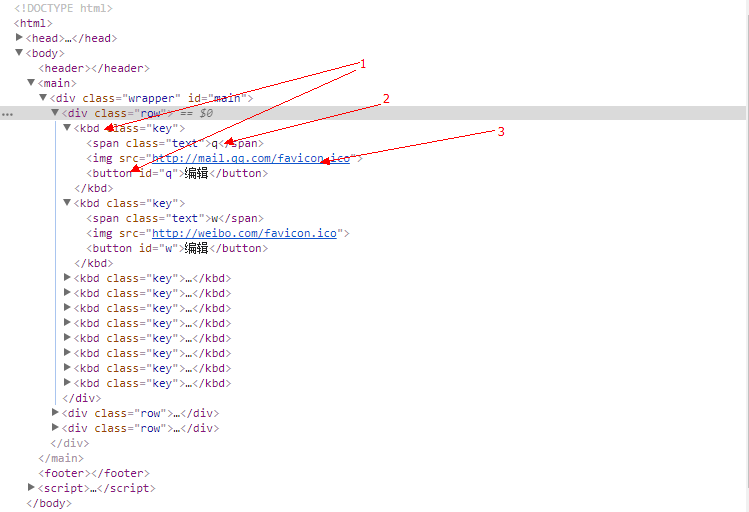

用JS做一个导航
目录
预览：

要实现的功能
- 在用户按下键时在新窗口打开相应的网站
- 对应网站的logo显示在按键上
- 按键可以自定义，且可以保存（鼠标悬浮在键盘上出现编辑，点击后弹出编辑框，并且可以保存）
1，首先要声明两个hash,用来存按键（qwer。。。）和按键对应的网址（q: qq.com;）
var hashA = init()
var keys = hashA["keys"]
var hash = hashA["hash"]
function init() {
var keys = {
0: ["q", "w", "e", "r", "t", "y", "u", "i", "o", "p"],
1: ["a", "s", "d", "f", "g", "h", "j", "k", "l"],
2: ["z", "x", "c", "v", "b", "n", "m"],
length: 3
}
var hash = {
q: 'mail.qq.com', w: 'weibo.com', e: undefined,
r: 'www.people.com.cn', t: 'taobao.com',
y: 'www.youtube.com', u: undefined,
i: 'iqiyi.com', o: undefined,
p: '52pojie.cn', a: 'acfun.tv',
s: 'souhu.com', d: 'douyu.com',
f: 'www.facebook.com', g: 'github.com',
h: 'huya.com', j: 'js.jirengu.com',
k: undefined, l: undefined, z: 'www.zhihu.com',
x: 'xiedaimala.com', c: undefined, v: undefined,
b: 'baidu.com', n: undefined, m: undefined
}
2，遍历keys，生成kbd标签（生标签加class）
generateKeybord(keys, hash)
function tag(tagName) {
return document.createElement(tagName)
}
function createSpan(textContent) {
var span = tag('span')
span.textContent = textContent
span.className = "text"
return span
}
function generateKeybord(keys, hash) {
for (var index = 0; index < keys['length']; index = index + 1) {
var div = tag('div')
div.className = 'row'
main.appendChild(div)
var row = keys[index] // 第一个数组,第二个数组,第三个数组
for (var index2 = 0; index2 < row['length']; index2 = index2 + 1) {
var span = createSpan(row[index2])
var button = creatButton(row[index2])
var img = creatImage(hash[row[index2]])
var kbd = tag('kbd')
kbd.className = 'key'
kbd.appendChild(span)
kbd.appendChild(img)
kbd.appendChild(button)
div.appendChild(kbd)
}
}
}

3，监听用户动作（监听到用户按了哪个键，然后在新标签页打开）
ListenToUser(hash)
function ListenToUser(hash) {
document.onkeypress = function (xzkjcnxlkcjlk) {
var key = xzkjcnxlkcjlk['key'] //q w e r...
var website = hash[key]
//location.href = 'http://'+website
window.open('http://' + website, '_blank')
}
}
4，加其他功能，可编辑保存，按键上显示对应网址的图标
function creatButton(id) {
var button = tag('button')
button.textContent = '编辑'
button.id = id
button.onclick = function (xzkjcnxlkcjlk) {
var button2 = xzkjcnxlkcjlk['target']
var img2 = button2.previousSibling
var key = button2['id']
var x = prompt('给我一个网址')
hash[key] = x //hash变更
img2.src = 'http://' + x + '/favicon.ico'
img2.onerror = function (xxx) {
xxx.target.src = ('./blank.png')
}
localStorage.setItem('zzz', JSON.stringify(hash)) //把变更后的hash存在zzz里面
}
return button
}
function creatImage(domain) {
var img = tag('img')
if (domain) {
img.src = 'http://' + domain + '/favicon.ico'
} else {
img.src = './blank.png'
}
img.onerror = function (xxx) {
xxx.target.src = ('./blank.png')
}
return img
}
然后再加上自己喜欢的CSS样式，一个只属于自己导航就完成了~~~